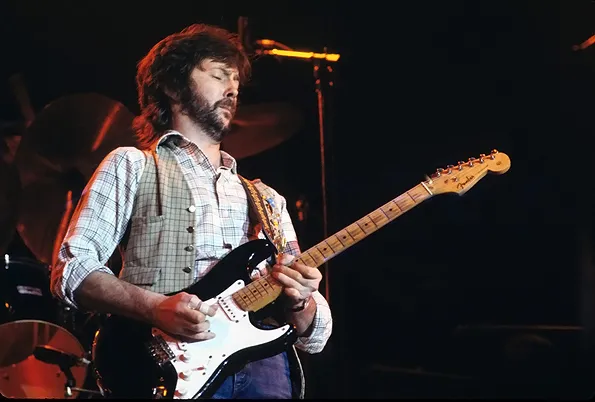
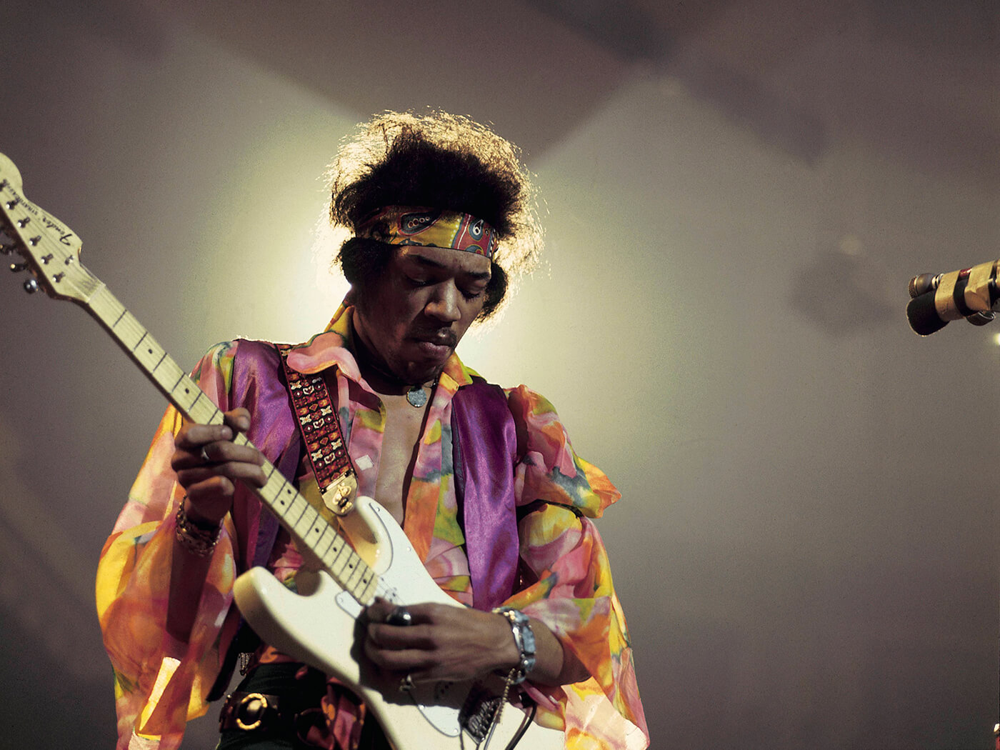
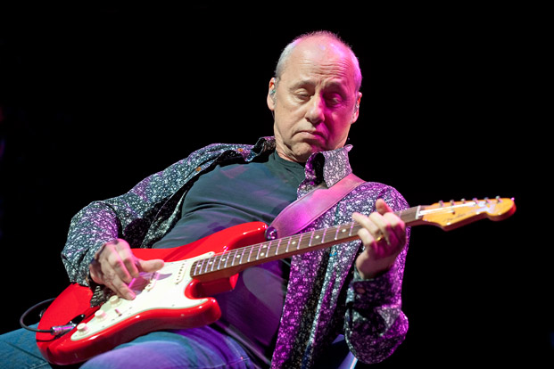
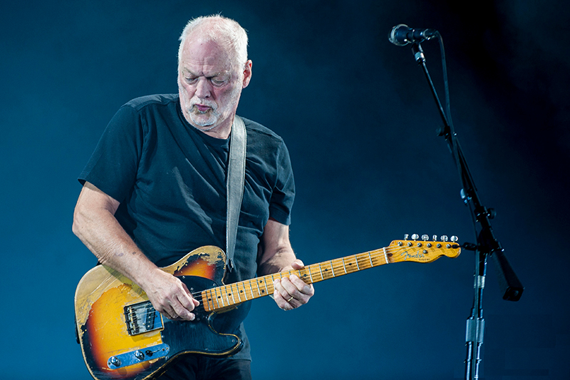
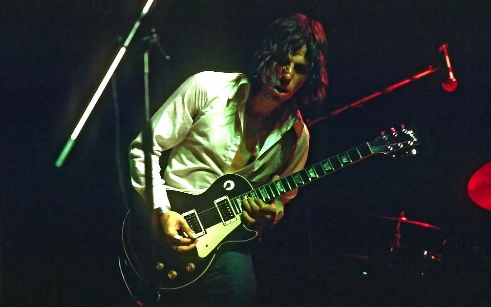

Wszystko o gitarach
Strona Główna
Gitarzyści i gitary
Galeria zdjęć
Legendarni gitarzyści
Opinie
Galeria zdjęć

Stratocaster Erica Claptona

Stratocaster Jimiego Hendrixa

Stratocaster Marka Knopflera

Telecaster Davida Gilmoura

Les Paul Jeffa Becka
Wróć na górę strony